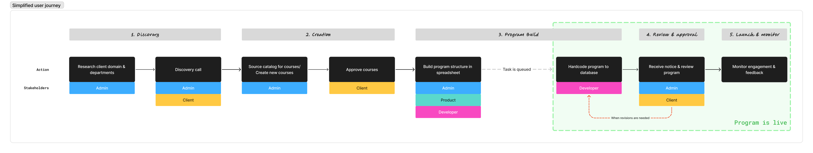
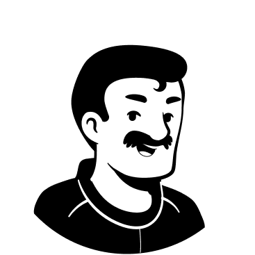
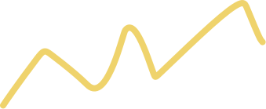

Enabling self-serve and scalable program creation.
I led design end-to-end as the sole designer, from research through handoff. The result was a self-serve creation interface that removed the developer dependency entirely and informed interaction patterns for long, complex forms across WiseTech Academy.
The existing process required extensive manual review and was built around the codebase rather than user goals, taking up to 3 weeks.

- Product support and development team absorbing the overhead throughout the process, taking up to 3 weeks to launch a program, resulting in missed opportunities to capture student attention.
- Expected enterprise client growth made the current process unscalable.
We spoke to 11 users across 2 teams to understand their existing workflow.

Internal Authors
- Go from discovery to a live program without weeks of dev wait
- Reuse or adapt existing content instead of duplicating work
- Tailor a program by audience (e.g. country-specific compliance)
- Edit content independently after launch
- Preview changes accurately before they go live
"If we had the tools to do it in the interface, it would take us 5 minutes, whereas it takes several weeks because we need developer intervention."
- Can't touch course templates once a program is live, even for small edits
- Brainstorming still happens on whiteboards and cards; nothing centralised
- No plan for scaling beyond existing workload
- Review process is ad hoc: a message, a task, or informal staging check

Academy Sales Team
- Build programs with mass-market appeal for fast uptake
- Know the business impact of a program to prioritise what's next
- Preview and tweak a program before it goes live
- Go from client call to live program without waiting on Product
"By the time we got it ready, the client had pretty much lost interest."
- Client needs live in phone calls and one person's head, not a system
- Intake spreadsheet is dense and unclear, needs constant Product hand-holding
- No visibility once handed off; client sometimes sees it live before they do
- Builds take so long the client has lost interest by launch
How might we support two fundamentally different search behaviours?
Internal admins needed precision while sales needed discoverability.
What was tested
Make searching for content easier and less dependent on knowing the catalogue structure in advance, by replacing column-based filtering with one global search bar.
The existing search locked users to column-based filtering, meaning users could only find something if they already knew which column to look in.
The sales team currently rely on memory and a Word doc that falls out of sync with the live catalogue. That works when everyone involved is small and senior. It doesn't scale as headcount grows or as enterprise clients begin navigating an unfamiliar catalogue.
- Single global search felt intuitive, on par with Google or Amazon
- Result variety was well received
- Filters worked as an effective last-resort fallback, only used when keyword search failed
- Consistent SharePoint naming meant text search was rarely even needed
- No way to preview course content before selecting it, forcing a guess
- This group prioritises speed and expects to already know what belongs in a program, so any friction here is costly, a preview needs to stay lightweight rather than add a step
- Fuzzy matching is a validated need, since sales has no standardised naming and today's process is exact-match only
- Fuzzy matching returned unexpected results, read as a system error.
- Global search took more attempts than their existing manual workarounds (Word doc, column search).

"If they have to go search for something and they don't find it and then they try one thing and they still don't find it, I think that is hard to recover from. Even if they eventually get it, they'll say, I don't want to go through that again."
- Reverted to a familiar data table pattern to temporarily resolve the search issue while working on pitching a platform-wide rehaul of the course catalogue, which would include standardising the sales team's private catalogue.
- Avoid custom componentry and use what PrimeVue has to offer due to resourcing constraints.
How might we keep an arbitrary constraint out of the way until necessary?
An unknown constraint: 'Course groups' existed as a technical requirement that was difficult and costly to undo. Most users never touched this in their existing workflow as it was originally included to accommodate an edge case. Every tester expressed they found it confusing as a concept and they couldn't see a need for the feature.
- Had not encountered 'groups' before as product managers would fill in the fields for them. Multiple testers asked why groups were needed at all, and if they could be removed for simplicity.
- The interface felt too busy, and the mandatory 'group' was missed in testing. This resulted in difficulty assessing whether a course was appropriate or spot errors.
- Recognised the concept but struggled with the interaction and page layout. They responded better once the layout matched familiar patterns from other parts of the platform.
- Appreciated the data density once they were oriented as it suited how they worked.
Keep the structure and process simple, flexible, and out of the way until needed.
- Pre-populated one group by default so users landed with the structure already in place, removing the need to add a group on first encounter.
- Errors surfaced inline, attached to the relevant card, only when something was wrong.
- Kept the structure simple, flexible, and most importantly, familiar. With product strategy shifting day by day, locking in a rigid architecture was an unnecessary risk.
Progressive disclosure keeps admins focused, not overwhelmed.
Grouping settings by relevance and surfacing them in stages meant admins could work through configuration without confronting the full complexity of the form at once. Plain language replaced technical labels wherever possible.

Autocomplete and defaults reduce repetitive input on an already long form.
Most inputs were consistent within the same organisation or domain, so pre-filling where possible reduced the effort required without removing control.

The 'shopping cart' pattern gives admins a live view of cost, duration, and structure as they build.
Users expressed confusion over how course groups and courses related to each other in the existing spreadsheet. Admins can see the shape and cost of a program without having to mentally reconstruct it from a flat list.

- Established a design pattern for progressive disclosure across the admin platform.
- Reframed groups and courses as a parent-child relationship, resolving a structural misrepresentation carried over from the spreadsheet.
- Introduced inline validation as a standard for high-risk actions, reducing reliance on documentation.
- Built flexibility into the program architecture so that certifications and learning streams can be introduced without a structural rebuild.